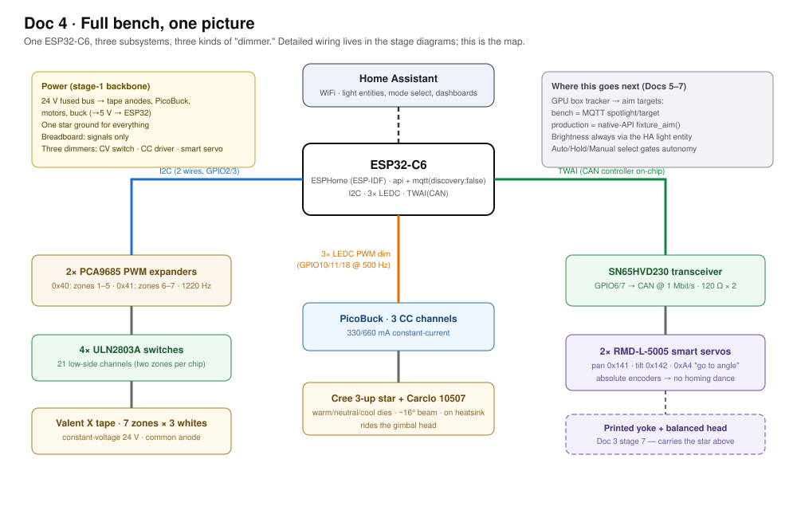
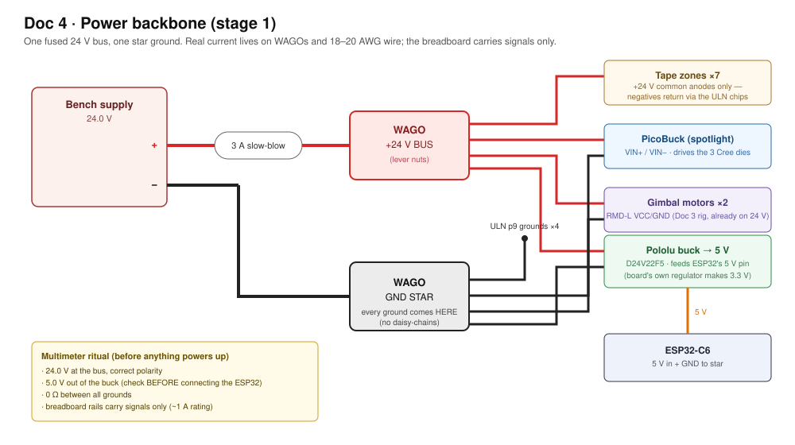
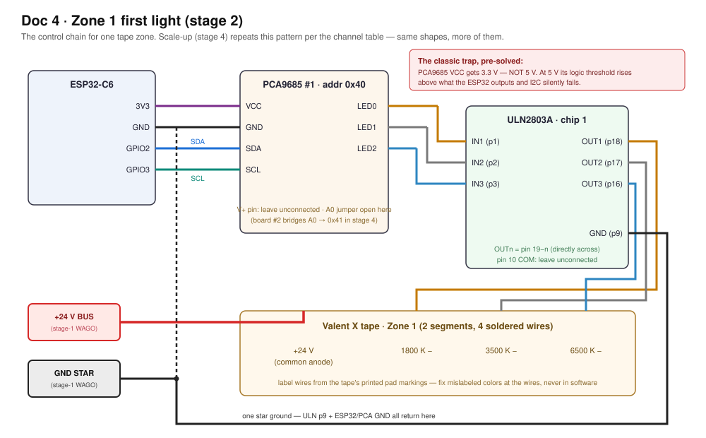

Doc 4 · Build the Full Fixture Bench — One ESP32, Everything¶
Engineered Lighting prototype series · July 2026 One ESP32-C6 controlling all three fixture subsystems on the bench: 21 channels of Valent X tunable-white tape + the 3-channel Cree spotlight + the CAN gimbal. Beginner-annotated throughout. Prereq: Doc 3 stages 1–6 (motors answering on CAN) — that work slots in at stage 6; stage 7's demo scene additionally uses the printed frame from Doc 3 stage 7.
Before you start — three prerequisites this doc quietly depends on:
- Home Assistant that can run Add-ons (Home Assistant OS or Supervised). Running HA in a plain Docker container or Core? The Add-on store won't exist — use the standalone CLI instead (
pip install esphome; it mirrors everything the Device Builder does, and the AI-partner section below is built around it anyway).- An MQTT broker — install the official Mosquitto broker add-on in HA now (Settings → Add-ons). Doc 3 stage 9, this doc's stage 6 look-ahead, and all of Doc 5 publish through it.
- Basic soldering — a $25–40 iron kit (in the BoM) and three easy jobs: wires onto the tape's big copper pads, one solder-blob jumper on PCA9685 #2, and optionally the PicoBuck current jumper. The tape pads are a forgiving place to learn; tin the pad, tin the wire, touch them together with the iron.
The whole bench, one picture¶

One C6, three subsystems, three kinds of "dimmer" (constant-voltage switches for tape, a constant-current driver for the star, smart servos for aim). Detailed wiring diagrams appear at stages 1 and 2.
Bill of Materials — LED side, ~$170–240 (+ Doc 3's gimbal BoM)¶
| # | Part | Qty | Est. | Where | Notes / traps |
|---|---|---|---|---|---|
| 1 | PCA9685 16-ch PWM breakout (Adafruit #815 or clone) | 2 | $30 / ~$10 clones | Adafruit, Amazon | The PWM expanders: each turns 2 I2C wires into 16 independent dimmer signals (we use 21 of the 32). Bridge the A0 jumper on board #2 so it answers at address 0x41 |
| 2 | ULN2803A driver IC, 18-pin DIP (+ sockets) | 4 (+1 spare) | $10 | Adafruit #970, Amazon | The muscle between logic and tape: each chip is 8 low-side switches that let 3.3 V dimmer signals switch the 24 V tape channels. Four chips = two zones per chip with spare inputs, so wiring stays zone-aligned (stage 4's table). Plugs straight into a breadboard |
| 2b | Soldering iron kit (iron, solder, flux, helping hands) | 1 | $25–40 | Amazon | For the tape-pad wires and PCA9685 #2's address jumper — see the prerequisites box above |
| 3 | SparkFun PicoBuck (PRT-13705) | 1 | $17.50 | sparkfun.com | The spotlight's driver: 3 constant-current channels in one screw-terminal module (330 mA/ch; solder jumper → 660 mA), each PWM-dimmable from a 3.3 V pin. Purpose-built for the exact job here — feeding one bare ~3 V LED per channel from a higher-voltage rail |
| 4 | Diode LED Valent X Tunable White spool (DI-24V-VLX-TW1865-016, 16.4 ft) | 1 | $486 | BuyRite Electric, LBC Lighting | 7 short zones ≈ 3.3 ft used; one spool covers everything with spare. Budget bench substitute if the spool price stings: BTF-Lighting 24 V CCT FCOB (~$30, UL, CRI 90+, bare strip) — 2-channel warm+cool, 3000–6000 K, so it wires as 2 of the 3 zone channels and skips the 1800 K deep-warm; fine for exercising the control chain, not the photometric target |
| 5 | Cree 3-up star (XP-G2/XP-L, warm/neutral/cool) + Carclo 10507 narrow-spot optic (~16° beam, clear, 84–89% efficient) | 1 | $15–25 (optics $3 ea) | LEDSupply | The spotlight payload for the gimbal head. 10507 is the tightest 3-up optic made — ~0.4 m spot at 1.5 m, ~0.85 m at 3 m. Also grab a 10508 (medium ~26°) and 10509 (wide ~43°): they snap-swap in seconds, which is the beam-width experiment. Brightness headroom is huge: even at the PicoBuck's default 330 mA with 90 CRI dies, expect ~500–1900 lux on target across 1.5–3 m — reading/food-prep practice calls for only 300–800 |
| 6 | Heatsink ≥2"×2" + thermal adhesive | 1 | $8 | Amazon | The star cooks itself bare in under a minute — never run unmounted |
| 7 | WAGO 221 lever-nut assortment | 1 pack | $15 | Amazon, Home Depot | 24 V power distribution — high current stays OFF the breadboard |
| 8 | Inline fuse holder + 3 A slow-blow fuses | 1 | $7 | Amazon | Cheap insurance on the 24 V rail |
| 9 | Pololu D24V22F5 buck (24 V→5 V, 2.5 A) | 1 | $7.95 | pololu.com/product/2858 | Fixed 5 V, nothing to mis-adjust. (Budget LM2596 works but ships set to a random voltage — verify before connecting) |
| 10 | 10 kΩ resistors, 22–24 AWG signal wire, 18–20 AWG for 24 V runs, extra breadboard | — | $20 | Amazon | Signal wiring lives on the breadboard; the heavier 18–20 AWG carries the 24 V runs between WAGOs |
Concepts (plain English — read once, everything refers back)¶
- PWM / duty cycle: dimming by blinking faster than the eye sees. 60% brightness = on 60% of each cycle. The frequency is cycles/second — high enough and even cameras can't catch flicker.
- CV vs CC (the two kinds of LED): LED tape is constant-voltage — feed it 24 V, it limits its own current; dim it by switching the 24 V rapidly (a $1 switch chip suffices). Bare high-power LEDs (the Cree star) are constant-current — they must be fed an exact current or they burn out, which takes a real driver module. Two different dimmers for two different physics.
- Why a PWM expander: the C6 has only 6 built-in PWM channels; we need 24. The PCA9685 chip makes 16 each and takes orders over I2C. Your fixture brief (external design doc, not on this site) anticipated exactly this ("dedicated multi-channel LED-driver ICs").
- I2C: a 2-wire party line (SDA data, SCL clock); each chip has an address (0x40, 0x41 = house numbers).
- Low-side switching & common anode: the tape's +24 V is always connected (the shared "anode"); each color channel dims by switching its negative wire to ground. Our switch is the ULN2803A (8 per chip). Its one cost: it "eats" ~1 V, so tape sees ~23 V — a uniform ~4% dimming, invisible in practice. (The production-faithful upgrade is MOSFETs, ~0.02 V drop.)
- CCT blending: the tape has three fixed whites (1800/3500/6500 K). Intermediate color temperatures are mixes — cool half of the dial blends 6500↔3500, warm half blends 3500↔1800. That blend is the one real piece of code in this build (stage 3, ~20 lines, provided).
- ESPHome: firmware you configure (YAML text) instead of program. Declare the hardware; it generates firmware, joins Home Assistant, creates dashboard entities. Since you already run HA, ~90% of this build is configuration. C6 requires ESPHome's ESP-IDF framework (its Arduino framework doesn't support C6).
Your toolchain, explicitly — and exactly how YAML gets onto the board¶
🤖 Give this to your agent
You're my bench agent for the Engineered Lighting full-fixture bench
(chapter: engineering.engineered.lighting/04-full-fixture-bench/,
toolchain section). On the bench: an ESP32-C6 that will run the whole
fixture from a single ESPHome YAML file — flashed over USB once,
wirelessly ever after.
Start by proposing a plan and wait for my approval before executing
anything.
Task: stand up the ESPHome command-line toolchain. Install the esphome
CLI with pip and verify it by running "esphome version". Then create
fixture-bench.yaml in this repo: a starter config for board
esp32-c6-devkitc-1 using the chapter's config header (variant esp32c6,
framework type esp-idf — the C6 requires ESP-IDF; ESPHome's Arduino
framework does not support it), plus esphome, wifi, api, and ota
sections. Ask me for the WiFi credentials instead of inventing them.
Prove the toolchain end to end by compiling without flashing
("esphome compile fixture-bench.yaml"). Keep the file in git so every
later edit is reviewable, and remember the one-file rule: this entire
chapter grows this single YAML file — later stages append under
existing top-level keys, never duplicate them.
Done when: "esphome version" prints a version and "esphome compile
fixture-bench.yaml" finishes with a successful build.
Report back: the esphome version string, the tail of the compile
output showing success, and the full fixture-bench.yaml you created.
There's no "upload button + code file" here like Arduino; ESPHome generates the firmware from your YAML and installs it. The full loop:
Do it by hand — understand what the agent did
- Install ESPHome Device Builder (current name of the "ESPHome Dashboard"): Home Assistant → Settings → Add-ons → Add-on Store → search "ESPHome Device Builder" → Install → Start → Open Web UI.
- Create the device: New Device → name it
fixture-bench→ pick ESP32-C6 → it generates a starter config with your WiFi credentials. Skip the install prompt for now. - Edit the YAML: click Edit on the device's card. Everything in this doc's
yamlblocks gets pasted into this one file, beneath the generated header (keep the generatedesphome:,wifi:,api:,ota:sections; add ours after them). Save. - First install — over USB: click Install → "Plug into this computer." Connect the C6 by USB-C data cable to the machine your browser is running on (Chrome/Edge required — flashing uses the browser's serial access), pick the port when prompted, and watch it compile (a few minutes first time) and flash.
- Every install after that — wireless: Install → "Wirelessly." The board updates itself over WiFi in ~30 s. You'll never touch the USB cable again unless you brick the WiFi config.
- Reading the board's output: click Logs on the device card — a live stream over the network (no cable) of everything the firmware is doing: I2C devices found, light state changes, CAN frames, and the all-important
Component ... took a long timeperformance warnings. This is your Serial-Monitor equivalent, and it works from anywhere in the house. - VS Code + the official ESPHome extension is the nicer editor once the YAML grows (validation + autocomplete as you type); the Device Builder's built-in editor is fine to start. Arduino IDE 2.x stays for Doc 3's interactive motor console only.
Config header every stage assumes:
esp32:
board: esp32-c6-devkitc-1
variant: esp32c6
framework:
type: esp-idf
AI as your lab partner (ESPHome edition)¶
ESPHome is unusually AI-friendly because the entire toolchain is drivable from a command line, and all the board's output is network-streamed text:
- Paste-level help (zero setup): ESPHome's validation errors are verbose and precise — paste the full error plus your YAML into Claude and the fix is usually one round trip. Same for the Logs stream when a light misbehaves.
- Agentic loop (Claude Code + the ESPHome CLI):
pip install esphomegives a command-line twin of the Device Builder.esphome run fixture-bench.yamlvalidates, compiles, uploads (USB or OTA), and streams logs in one command;esphome logs fixture-bench.yamlattaches to a running board over the network — no cable, from any machine on the LAN. That means a coding agent can own the whole iterate loop: edit YAML →esphome run→ read the validation or runtime output → fix → repeat. Keep the YAML in git so its edits are reviewable. Example ask: "Add zones 2–7 following the zone-1 pattern, flash it OTA, then watch the logs for two minutes and report any 'took a long time' warnings." - Telemetry watching: once MQTT is flowing,
mosquitto_sub -t '#' -vgives an agent the live state of every light and the gimbal — useful for soak tests ("watch for an hour, summarize anything anomalous") that no human wants to babysit. - The rule from Doc 3 stands: agents read and flash freely; anything that moves the gimbal runs only while you're watching, hand near the supply.
Stage 1 — Power backbone¶
Hands-on stage — no agent lane; the level-3 wiring photo check applies.

This build runs at 24 V (tape-native; motors accept it too — one rail, like the fixture).
- Supply + → 3 A slow-blow fuse → WAGO = the +24 V bus. Supply − → WAGO = the ground star point (every subsystem grounds directly here — daisy-chained grounds cause zone-to-zone brightness mismatch).
- 24 V → Pololu buck → 5 V → ESP32's 5 V pin (or keep USB power during dev — either way, tie grounds).
- Breadboard carries signals only (I2C, PWM, dim lines — milliamps). All real current (24 V feeds, tape, spotlight, motors) lives on WAGOs and 18–20 AWG wire. Rails die ~1 A; respect that and there are no mystery failures.
- Multimeter ritual: 24 V at the bus, 5 V from the buck, 0 Ω between all grounds.
Done when: one fused 24 V bus, one star ground, 5 V logic rail.
Stage 2 — First light: one zone, three sliders¶
🤖 Give this to your agent
You're my bench agent for the Engineered Lighting full-fixture bench
(chapter: engineering.engineered.lighting/04-full-fixture-bench/,
stage 2). On the bench: one soldered zone of Valent X tunable-white
tape — three white channels (1800 K, 3500 K, 6500 K) — wired through
PCA9685 #1 at address 0x40 and a ULN2803A to the ESP32-C6, with +24 V
on the common anode.
Start by proposing a plan and wait for my approval before executing
anything.
Task: append the stage-2 YAML in the chapter to fixture-bench.yaml —
i2c on GPIO2/GPIO3 at 400kHz, the pca9685 hub at address 0x40 at
1220 Hz with phase_balancer none, three pca9685 outputs on channels
0-2, and the three monochromatic lights (Zone 1 Warm/Neutral/Cool).
One-file rule: add the entries under my existing top-level keys, never
a second copy of a key. Before flashing, have me confirm the classic
wiring trap: PCA9685 VCC is on 3.3 V, not 5 V, and V+ stays
unconnected. Validate the config with the esphome CLI, flash over USB
(this first install is wired; every later one is OTA), then watch the
device logs for the I2C scan finding the chip at 0x40. No motor
motion is involved in this stage.
Done when: three HA sliders each drive the correct white,
flicker-free. Wrong color on a slider = swapped wires — fix the
wires, keep labels truthful.
Report back: the validation and flash output, the log lines showing
the PCA9685 found at 0x40, and the three light entities as they
appear in HA.
Cut one radial zone (2 tape segments = 4.92") at the printed cut lines; solder four wires: +24 V and the three channel negatives — label them from the tape's printed pad markings (this is also where you verify the common-anode wiring the spec sheet implies).
Wire the chain (power off):

The full chain with pin numbers and the 3.3 V trap called out. ASCII version below:
Plain-text wiring (quick bench reference)
ESP32-C6 PCA9685 #1 (0x40) ULN2803A #1
-------- ----------------- -----------
3V3 ───────────────── VCC (NOT V+)
GND ───────────────── GND ─────────────────────── GND (pin 9)
GPIO2 (SDA) ───────── SDA
GPIO3 (SCL) ───────── SCL
LED0 ─────────────────────── IN1 → OUT1 (pin 18) → tape 1800K −
LED1 ─────────────────────── IN2 → OUT2 (pin 17) → tape 3500K −
LED2 ─────────────────────── IN3 → OUT3 (pin 16) → tape 6500K −
24V bus ── +24 V ─────────────────────────────────── tape +24V (common anode)
ground star ──────────────────────────────────────── ULN GND (pin 9)
The classic trap, pre-solved: PCA9685 VCC gets 3.3 V, not 5 V. At 5 V the chip's logic threshold rises above what the ESP32 outputs and the I2C bus gets pulled past the C6's rated maximum — a silent, maddening failure. 3.3 V makes it correct by construction. V+ (servo power pin) stays unconnected. ULN inputs need no resistors (built in); leave ULN pin 10 (COM) unconnected for LEDs.
i2c:
sda: GPIO2
scl: GPIO3
frequency: 400kHz
pca9685:
- id: pwm1
address: 0x40
frequency: 1220 Hz # near the chip's 1526 Hz max = least visible flicker
phase_balancer: none # ESPHome's recommendation for LEDs
output:
- platform: pca9685
id: z1_warm # 1800 K channel
pca9685_id: pwm1
channel: 0
- platform: pca9685
id: z1_neutral # 3500 K
pca9685_id: pwm1
channel: 1
- platform: pca9685
id: z1_cool # 6500 K
pca9685_id: pwm1
channel: 2
light:
- platform: monochromatic
name: "Zone 1 Warm 1800K"
output: z1_warm
- platform: monochromatic
name: "Zone 1 Neutral 3500K"
output: z1_neutral
- platform: monochromatic
name: "Zone 1 Cool 6500K"
output: z1_cool
Done when: three HA sliders each drive the correct white, flicker-free. Wrong color on a slider = swapped wires — fix the wires, keep labels truthful. If stuck: ESPHome logs say if the PCA9685 isn't found (SDA/SCL swapped or VCC missing). Light on but not dimming = wrong ULN channel. Dead = check tape +24 V.
Stage 3 — Make it tunable: the tri-white blend¶
🤖 Give this to your agent
You're my bench agent for the Engineered Lighting full-fixture bench
(chapter: engineering.engineered.lighting/04-full-fixture-bench/,
stage 3). On the bench: zone 1 lit from stage 2 as three separate
sliders; this stage turns it into one tunable-white light using the
tri-white blend — ESPHome has no built-in 3-white light, so the
supported pattern is a cwww light routed through template outputs
whose lambda does the 3-channel math.
Start by proposing a plan and wait for my approval before executing
anything.
Task: implement the stage-3 YAML in the chapter in fixture-bench.yaml:
the z1_cw/z1_ww globals, the z1_apply script whose lambda blends the
cool half of the dial between 6500 and 3500 K and the warm half
between 3500 and 1800 K, the two template float outputs (z1_cw_in,
z1_ww_in) that store state and run the script, and the cwww light
"Zone 1" with constant_brightness true. Remove stage-2's three
monochromatic lights as the stage directs, keeping the three pca9685
outputs. One-file rule: append under my existing output:/light:/
globals:/script: keys — pasting a duplicate top-level key fails
validation with a cryptic duplicate-key error. Validate with the
esphome CLI, flash over the air, then watch the logs while I sweep
the slider. No motor motion is involved in this stage.
Done when: "Zone 1" is one light whose CT slider sweeps
candlelight→daylight smoothly.
Report back: the validation output, the YAML diff, and a short log
excerpt from the flash and the first slider sweep.
Honest part: ESPHome has no built-in 3-white light (its cwww blends two; the old "custom component" escape hatch was removed in 2025 — ignore tutorials using it). The supported pattern: a cwww light for the UI (brightness + color-temperature slider), routed through template outputs whose lambda (C++ snippet in YAML) does the 3-channel math.
One-file YAML rule (the classic beginner trap): this whole doc grows a single config file. When a snippet shows a top-level key you already have (
output:,light:,globals:,script:), append the new entries under your existing key — never paste a second copy of the key itself, or validation fails with a cryptic duplicate-key error. Unsure your file's shape is right? Paste the whole thing into Claude and ask it to check the structure.
globals:
- { id: z1_cw, type: float, initial_value: '0' } # last cold value (0..1)
- { id: z1_ww, type: float, initial_value: '0' } # last warm value
script:
- id: z1_apply
then:
- lambda: |-
float cw = id(z1_cw), ww = id(z1_ww);
float b = cw + ww; // total brightness
float w18, w35, w65;
if (b <= 0.001f) { w18 = w35 = w65 = 0; }
else {
float t = ww / b; // warmth: 0=6500K .. 1=1800K
if (t <= 0.5f) { float u = t*2; // cool half: 6500 <-> 3500
w65 = b*(1-u); w35 = b*u; w18 = 0; }
else { float u = (t-0.5f)*2; // warm half: 3500 <-> 1800
w65 = 0; w35 = b*(1-u); w18 = b*u; }
}
id(z1_warm).set_level(w18);
id(z1_neutral).set_level(w35);
id(z1_cool).set_level(w65);
output: # ADD these; REMOVE stage-2's three monochromatic lights
- platform: template
id: z1_cw_in
type: float
write_action: [ { lambda: 'id(z1_cw) = state;' }, { script.execute: z1_apply } ]
- platform: template
id: z1_ww_in
type: float
write_action: [ { lambda: 'id(z1_ww) = state;' }, { script.execute: z1_apply } ]
light:
- platform: cwww
name: "Zone 1"
cold_white: z1_cw_in
warm_white: z1_ww_in
cold_white_color_temperature: 6500 K
warm_white_color_temperature: 1800 K
constant_brightness: true # keeps cw+ww ≤ 1 so the math above holds
Footnotes: the slider midpoint won't be exactly 3500 K (HA works in mireds — calibration is a fixture-phase task with a light meter), and this linear blend is v1 — perceptual refinements are software-only later.
Done when: "Zone 1" is one light whose CT slider sweeps candlelight→daylight smoothly.
Stage 4 — Scale to 7 zones (21 channels)¶
🤖 Give this to your agent
You're my bench agent for the Engineered Lighting full-fixture bench
(chapter: engineering.engineered.lighting/04-full-fixture-bench/,
stage 4). On the bench: all 7 zones soldered and labeled (28 wires),
PCA9685 #2 bridged to address 0x41, ULN chips 2-4 seated — 21 tape
channels total.
Start by proposing a plan and wait for my approval before executing
anything.
Task: scale zone 1 to all 7 zones. Generate zones 2-7 from the
zone/channel table in the stage — do not hand-copy. Each table row
gives one zone's PCA9685 hub and channels (hub1 = 0x40, hub2 = 0x41)
and its ULN chip and IN/OUT pins, three channels per zone in
warm/neutral/cool order. Derive the config from that table (a small
generator script or a systematic expansion), producing z2_ through
z7_ globals, scripts, template outputs, pca9685 outputs, and cwww
lights that mirror the stage-3 zone-1 pattern exactly — the stage-4
YAML in the chapter is precisely this expansion, verbose but
transparent. Add the second pca9685 hub block at address 0x41, and
confirm with me that the A0 solder jumper on board #2 is bridged
before flashing. One-file rule: extend my existing top-level keys,
never duplicate them. Validate with the esphome CLI, flash over the
air, then watch the logs for "Component ... took a long time"
warnings — the single-core C6 telling us it is straining. No motor
motion is involved in this stage.
Done when: 7 independent tunable lights; an HA scene "all zones
2200 K @ 20%" runs smoothly. That's movie mode on a breadboard.
Report back: the generated YAML diff, the validation and flash
output, the seven light entities as they appear in HA, and a log
excerpt from several minutes of runtime noting any
took-a-long-time warnings.
- Solder the remaining zones (5 radials + the 4-segment bottom ring as one zone). Label every wire at both ends — 28 wires now exist.
- Bridge PCA9685 #2's A0 jumper (→ 0x41); same I2C wires, same 3.3 V. Add ULN chips 2–4.
- Wire to this table (print it, tape it above the bench). ULN pin geometry: input INn is pin n; its output is directly across the chip (OUTn = pin 19−n). Each row is one zone's three channels in W/N/C order:
| Zone | PCA9685 : channels | ULN chip : IN pins | ULN OUT pins (to tape −) |
|---|---|---|---|
| 1 (radial) | hub1 : 0, 1, 2 | chip1 : 1, 2, 3 | 18, 17, 16 |
| 2 (radial) | hub1 : 3, 4, 5 | chip1 : 4, 5, 6 | 15, 14, 13 |
| 3 (radial) | hub1 : 6, 7, 8 | chip2 : 1, 2, 3 | 18, 17, 16 |
| 4 (radial) | hub1 : 9, 10, 11 | chip2 : 4, 5, 6 | 15, 14, 13 |
| 5 (radial) | hub1 : 12, 13, 14 | chip3 : 1, 2, 3 | 18, 17, 16 |
| 6 (radial) | hub2 : 0, 1, 2 | chip3 : 4, 5, 6 | 15, 14, 13 |
| 7 (bottom ring) | hub2 : 3, 4, 5 | chip4 : 1, 2, 3 | 18, 17, 16 |
Every chip's pin 9 goes to the ground star; pin 10 stays unconnected; every zone's +24 V lead goes to the WAGO bus.
- Duplicate the stage-3 block per zone (
z2_…z7_). Verbose but transparent — compress with ESPHome "packages" later, not now. - After flashing, watch Logs for
Component ... took a long time— the single-core C6 telling you it's straining. This design computes only on changes, so you shouldn't see it; this is the honest untested territory (nobody has benchmarked 24 PWM + CAN + WiFi on a C6).
Done when: 7 independent tunable lights; an HA scene "all zones 2200 K @ 20%" runs smoothly. That's movie mode on a breadboard.
Stage 5 — The spotlight (constant-current)¶
🤖 Give this to your agent
You're my bench agent for the Engineered Lighting full-fixture bench
(chapter: engineering.engineered.lighting/04-full-fixture-bench/,
stage 5). On the bench: the Cree 3-up star mounted on its heatsink,
fed by the PicoBuck's three constant-current channels, with the dim
signals coming from native ESP32-C6 pins.
Start by proposing a plan and wait for my approval before executing
anything.
Task: append the stage-5 YAML in the chapter to fixture-bench.yaml:
three ledc outputs on GPIO10, GPIO11, and GPIO18 at 500 Hz — native
pins, not the PCA9685, because each PCA9685 runs one frequency for
all 16 channels and the tape needs ~1.2 kHz+ while CC-driver dim
inputs typically want 1 kHz or less — plus the two template outputs
spot_cw_in/spot_ww_in exactly like stage 3's, and the "Spotlight"
cwww light (5700 K cold, 3000 K warm, constant_brightness true).
One-file rule: extend my existing top-level keys, never duplicate
them. Before power-on, have me confirm the star is on its heatsink
and aimed at the wall — it cooks itself bare in under a minute and
is painfully bright. Validate with the esphome CLI and flash over
the air. No motor motion is involved in this stage.
Done when: the Spotlight entity dims 0→100% on all three dies. CC
drivers can get twitchy below ~5% duty — note the floor; the
coordinator respects it in software.
Report back: the validation and flash output, the YAML diff, the
Spotlight entity as it appears in HA, and the lowest duty that still
dims cleanly once we test it together.
Mount the star to its heatsink first (it dissipates ~3 W in a coin-sized PCB), and aim it at the wall — these are painfully bright point sources.
Wiring: PicoBuck VIN from the 24 V bus/star ground; each output pair to one Cree die (check printed polarity). The three dim signals come from native ESP32 pins — GPIO10/11/18:
Why native pins, not the PCA9685: each PCA9685 chip runs ONE frequency for all 16 channels. Tape wants ~1.2 kHz+ (flicker); CC-driver dim inputs typically want ≤1 kHz. Rather than compromise both, the spotlight's 3 signals use the C6's own LEDC channels (6 exist; 3 free after this).
output:
- platform: ledc
id: spot_warm_pwm
pin: GPIO10
frequency: 500 Hz
- platform: ledc
id: spot_neutral_pwm
pin: GPIO11
frequency: 500 Hz
- platform: ledc
id: spot_cool_pwm
pin: GPIO18
frequency: 500 Hz
# + two template outputs spot_cw_in / spot_ww_in, exactly like stage 3
light:
- platform: cwww
name: "Spotlight"
cold_white: spot_cw_in
warm_white: spot_ww_in
cold_white_color_temperature: 5700 K # set to the actual Cree bins
warm_white_color_temperature: 3000 K # (LEDSupply confirms)
constant_brightness: true
Done when: the Spotlight entity dims 0→100% on all three dies. CC drivers can get twitchy below ~5% duty — note the floor; the coordinator respects it in software.
Stage 6 — Gimbal joins the same chip¶
🤖 Give this to your agent
You're my bench agent for the Engineered Lighting full-fixture bench
(chapter: engineering.engineered.lighting/04-full-fixture-bench/,
stage 6). On the bench: the gimbal from the previous chapter — motors
already answering on CAN — joining the same ESP32-C6, with the CAN
transceiver on GPIO6/GPIO7 and motors at IDs 0x141/0x142.
Start by proposing a plan and wait for my approval before executing
anything.
Task: append the stage-6 YAML in the chapter to fixture-bench.yaml:
the esp32_can canbus block (tx GPIO6, rx GPIO7, our node's can_id
0x7F0, bit_rate 1000KBPS) with the on_frame logger for 0x141, the
"Spot Pan" template number (-170 to 170, step 0.5) whose set_action
sends the 0xA4 position frame at 30 deg/s, and its "Spot Tilt"
duplicate on can_id 0x142 with min -90 / max 90. One-file rule:
extend my existing top-level keys, never duplicate them. Traps from
the stage: never transmit onto a bus with no powered motor — endless
retries can watchdog-reboot the node — so confirm with me that the
gimbal is powered before flashing; and replies may arrive on
0x241/0x242 depending on protocol version, so if the logs stay
silent while the motors obey, add those on_frame blocks per my
shipped protocol PDF. Validate with the esphome CLI, then flash over
the air.
SAFETY — non-negotiable: never command motor motion unless I confirm
I'm watching with a hand near the supply switch. The bench current
limit stays as set. Announce each motion command before sending it
and wait for my explicit go.
Done when: dragging Spot Pan/Tilt sliders in HA moves the physical
beam.
Report back: the validation and flash output, the YAML diff, and a
log excerpt showing frames received from the motors during the
supervised pan/tilt test.
Prereq: Doc 3 stages 1–6 done (interactive console is the right place to learn motors; this stage ports them into ESPHome). ESPHome's canbus officially supports the C6 at 1 Mbps. Wiring: identical to Doc 3 (transceiver on GPIO6/7).
canbus:
- platform: esp32_can
id: gimbal_bus
tx_pin: GPIO6
rx_pin: GPIO7
can_id: 0x7F0 # our node's own id — required field, unused here
bit_rate: 1000KBPS
on_frame:
- can_id: 0x141
then: [ { lambda: 'ESP_LOGI("gimbal","pan: %02X %02X %02X %02X %02X %02X %02X %02X", x[0],x[1],x[2],x[3],x[4],x[5],x[6],x[7]);' } ]
number:
- platform: template
name: "Spot Pan"
min_value: -170
max_value: 170
step: 0.5
initial_value: 0
optimistic: true
set_action:
- canbus.send:
canbus_id: gimbal_bus
can_id: 0x141
data: !lambda |-
int32_t p = (int32_t)(x * 100.0f);
uint16_t v = 30; // deg/s — slow & silent for bench
return {0xA4, 0x00, (uint8_t)(v & 0xFF), (uint8_t)(v >> 8),
(uint8_t)(p & 0xFF), (uint8_t)((p >> 8) & 0xFF),
(uint8_t)((p >> 16) & 0xFF), (uint8_t)((p >> 24) & 0xFF)};
# duplicate as "Spot Tilt" with can_id 0x142, min -90 / max 90
Footnotes: replies may arrive on 0x141/0x142 or 0x240+ID depending on protocol version — if logs stay silent while motors obey, add blocks for 0x241/0x242 (check your shipped PDF). Never transmit onto a bus with no powered motor — endless retries can watchdog-reboot the node.
Looking ahead (Doc 5): HA sliders are the bench interface. The follow-me loop will instead publish aim targets ~5–15×/second — subscribe the ESP32 to a raw MQTT topic (spotlight/target — the same name Doc 3 stage 9 and Doc 5 Phase 0 use; ESPHome's mqtt: component with an on_message trigger; it runs happily alongside the HA api:, and the AI-partner workflow above is the right way to scaffold the JSON-to-CAN lambda) and lean on 0xA4's speed-limit field: the motor interpolates between waypoints onboard, so modest update rates still produce continuous motion (this is exactly what dissolves the "steppy PTZ" problem). The full graduation path — an Auto/Hold/Manual mode select gating the stream, brightness flowing only through the light entity, discovery: false to avoid duplicate entities, and eventually replacing the MQTT lane with a typed native-API action (api: actions: fixture_aim) that the GPU box calls directly via aioesphomeapi — is specced in Doc 6 (§1 for the transport, "Living inside Home Assistant" for the entity model). One production gotcha to bank now: once CAN telemetry flows, set logger: level: INFO — per-frame DEBUG logging is the documented crash cause on busy ESPHome CAN nodes.
Done when: dragging Spot Pan/Tilt sliders in HA moves the physical beam.
Stage 7 — Integration day + verdict¶
🤖 Give this to your agent
You're my bench agent for the Engineered Lighting full-fixture bench
(chapter: engineering.engineered.lighting/04-full-fixture-bench/,
stage 7). On the bench: the finished system — 7 tunable zones, the
spotlight, and the gimbal on one ESP32-C6 — ready for scenes, the
checklist, and the verdict.
Start by proposing a plan and wait for my approval before executing
anything.
Task: first help me build the HA dashboard (7 zones, Spotlight,
pan/tilt) and the two scenes from the stage: Movie (radials 2000 K
@ 15%, ring off, spot off) and Reading (radials 2700 K @ 40%, spot
3000 K @ 60%, aimed at the chair — I jog the Spot Pan/Tilt sliders
until the beam sits on the chair, then we save those numbers into
the scene). Then work through the stage-7 checklist in the chapter
item by item with me: CT sweeps and equal-settings matching
(mismatch = ground star problem, not software), the pencil-wave and
slow-mo flicker tests, gimbal motion with all 24 channels lit,
scene-switch speed, the soak, and the worst-case current reading.
For the 30-minute "everything on" soak, watch the device logs the
whole time and summarize warnings, resets, and any "took a long
time" lines; I handle the touch tests and record the worst-case
24 V current with the meter.
SAFETY — non-negotiable: never command motor motion unless I confirm
I'm watching with a hand near the supply switch. The bench current
limit stays as set. Announce each motion command before sending it
and wait for my explicit go.
Done when: every item of the stage-7 checklist in the chapter
passes.
Report back: the checklist with pass/fail and evidence per item, the
30-minute soak-log summary (warnings, resets, took-a-long-time
counts), and the recorded worst-case 24 V current for the fixture
power budget.
Build an HA dashboard (7 zones, Spotlight, pan/tilt) and two scenes: Movie (radials 2000 K @ 15%, ring off, spot off) and Reading (radials 2700 K @ 40%, spot 3000 K @ 60%, aimed at the chair — jog the Spot Pan/Tilt sliders until the beam sits on the chair, then save those numbers into the scene). Toggle while watching logs and the tape.
Checklist:
- All zones sweep CT smoothly; equal settings look equal (mismatch = ground star problem, not software)
- Flicker: pencil-wave test + phone slow-mo (PCA9685's ~1.2–1.5 kHz is prototype-grade; the production PCB's driver ICs run ~10× higher — don't over-optimize here)
- Gimbal moves while all 24 channels are lit — no resets, no CAN errors
- Scene switch feels instant (<300 ms perceived)
- 30-min soak "everything on": ULNs warm-not-hot, star heatsink warm, no reboots in logs
- Worst-case 24 V current — record it for the fixture power budget (external design doc: the fixture brief's ~60 W mode-based table)
What graduates to the fixture PCB: this architecture as-is — C6 + I2C PWM expansion + low-side drive + CC channels + CAN — with ULNs → MOSFETs/driver ICs at higher PWM frequency, PicoBuck → integrated CC stage, WAGOs → copper.
Risk register¶
- Single-core C6 under the full load is undocumented territory — verified piece-by-piece, never benchmarked together. Log-watching in stages 4/7 is the test; worst-case fallback is splitting lighting/gimbal across two C6 nodes (a 20-minute ESPHome change).
- The tri-white blend is yours — no published component exists; stage 3's lambda is the supported pattern, not a library.
- Valent X 4-wire layout: verify printed pad labels before soldering 28 wires.
- PicoBuck tops out at 660 mA/ch — right for the bench; XP-L at 1–3 A is a different driver + heatsink, decided after seeing 330/660 mA in a real room.
- Motor protocol drift (Doc 3): trust the PDF in the box.
Further reading¶
ESPHome: esp32 platform & ESP-IDF requirement · pca9685 · ledc (C6 = 6 ch) · canbus/esp32_can · template output · cwww — all at esphome.io · custom-component removal — developers.esphome.io (Feb 19 2025) · PCA9685 datasheet (VIH = 0.7·VDD — the 3.3 V rule) — nxp.com · ULN2803A — Adafruit datasheet · PicoBuck hookup — learn.sparkfun.com · NLDD-H ≥6 V trap — ledsupply.com · Valent X — diodeled.com · D24V22F5 — pololu.com